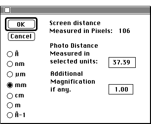

Distributed By: Virtual Labs
SAD & CBED Set Magnification Dialog Box
PATH...{SAD}:Exp. Info:Get D-spacings + Plane (Ring M.):[option M]
PATH...{CBED}:Exp. Info:Get D-spacings + Plane (Ring M.):[option M]
The Set Magnification Dialog Box is another method of setting the conversion
factor for diffraction patterns. It can be used instead of the camera constant
or in conjunction with the camera constant.

Set Magnification Dialog Box
This dialog allows the microscope camera length to be set from known values
so that upon importing experimental patterns, Desktop Microscopist can automatically
compensate for the magnification of the camera. After setting the correct
camera length, measure a g-vector using one of the two different measuring
techniques (Get d-space + Planes Ring or Line Method), activate this dialog
box and type in the measured distance from the actual diffraction pattern.
Example: Given a diffraction pattern of the [001] zone axis for Aluminum
taken at a camera constant of 24 mm-Å. The actual distance measured
from the transmission spot to the 002 g-vector is 11.98 mm. However, after
the magnification resulting from the use of a CCD camera or scan technique,
the distance is now measured at 21.87 mm. To compensate for the magnification:
Select either Get d-space + Planes (Ring M) or Get d-space + Plane (Line
Method). Measure a set distance.
For the ring method, pull out the ring until the diameter matches the distance
between two 002 g-vectors. For the line method, set the length of the first
line to the distance between the transmitted beam and the 002 g-vector.
Then, press <option-m>. When the magnification dialog box appears,
type in 23.96 (length of 2 002 g-vectors) for the ring method or 11.98 mm
for the line method. The magnification will then be automatically determined
by Desktop Microscopist. Other units are available as well.
The Additional Magnification if any. editable text box may also be used
if additional magnifications are known accurately.
Author: J.ames T.
Stanley
 Desktop
Manual:Dialog Boxes
Desktop
Manual:Dialog Boxes
Distributed By: Virtual Labs
Last Updated:1/12/96 Sat, Apr 27, 1996